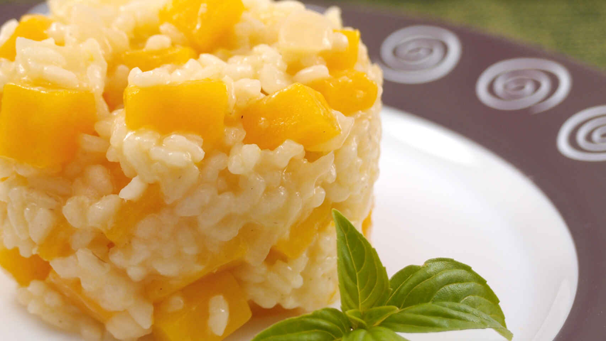

Rissoto de calabaza

La receta rápida por excelencia explicada paso a paso.
Si les gusta los contrastes de sabores este risotto les va a encantar, el
toque dulzón de la calabaza junto con el arroz y el queso son una
combinación espectacular
Ingredientes:
- 1 Calabaza
- Manteca , 1 cucharada
- 2 cebollas
- Caldo , el que prefieras
- Queso parmesano , 150g
Preparación:
-
pelaremos la calabaza y la cortaremos en brunoisse (es decir, en
daditos). Reservamos
-
en una olla ponemos a calentar una cucharadita de mantequilla. Mientras
se derrite, picaremos la cebolla todo lo finita que podamos y la
pondremos a pochar en la mantequilla ya derretida, a fuego medio
-
Cuando la cebolla ya esté pochada, añadiremos los daditos de calabaza y
el arroz. Salpimentaremos al gusto y a continuación añadiremos el vasito
de vino blanco. Mezclamos todo bien y dejamos reducir el vino durante un
par de minutos. Importante: no dejes de remover.
-
Hay que char el caldo poco a poco, en varias tantas (cuantas más mejor)
y remover continuamente el arroz para que suelte todo el almidón, que es
lo que hará que el arroz esté en su punto y se cree esa cremita tan
típica del risotto. Además, es importante que al echar el caldo, este no
rompa en ningún momento la temperatura de cocción, es decir que habrá
que echar el caldo muy caliente o incluso hirviendo
-
¿Como echar el caldo? Lo que yo hago es preparar el caldo que voy a
necesitar en una jarrita y calentarlo en el microondas, hasta el punto
de ebullición, justo antes de necesitarlo. Echo un cuarto del caldo al
arroz, remuevo, dejo que reduzca y cuando el arroz se queda sin caldo,
echo otro cuarto. Así hasta terminar con todo el caldo. Si se diera el
caso de que al terminar con el caldo el arroz todavía estuviera un poco
entero, podemos añadir simplemente agua, pero siempre a la misma
temperatura de la cocción, así que será necesario calentarla antes en el
microondas o en un cazo aparte
-
el arroz está a nuestro gusto de textura, retiramos del fuego y echamos
el parmesano rallado, que se deshará gracias al calor residual
- Ahora emplatamos y a disfrutar